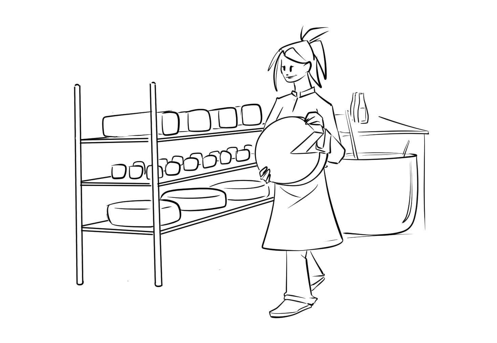
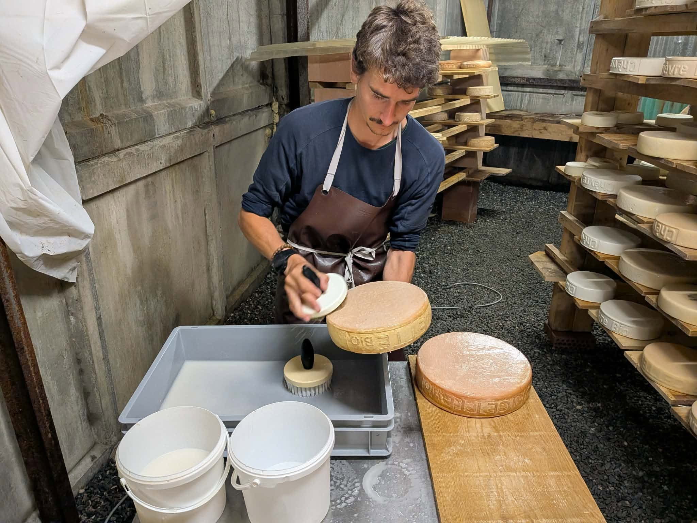
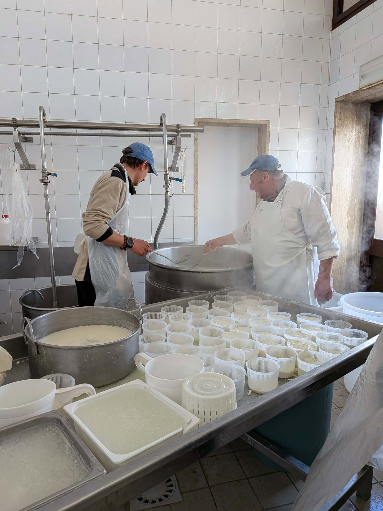
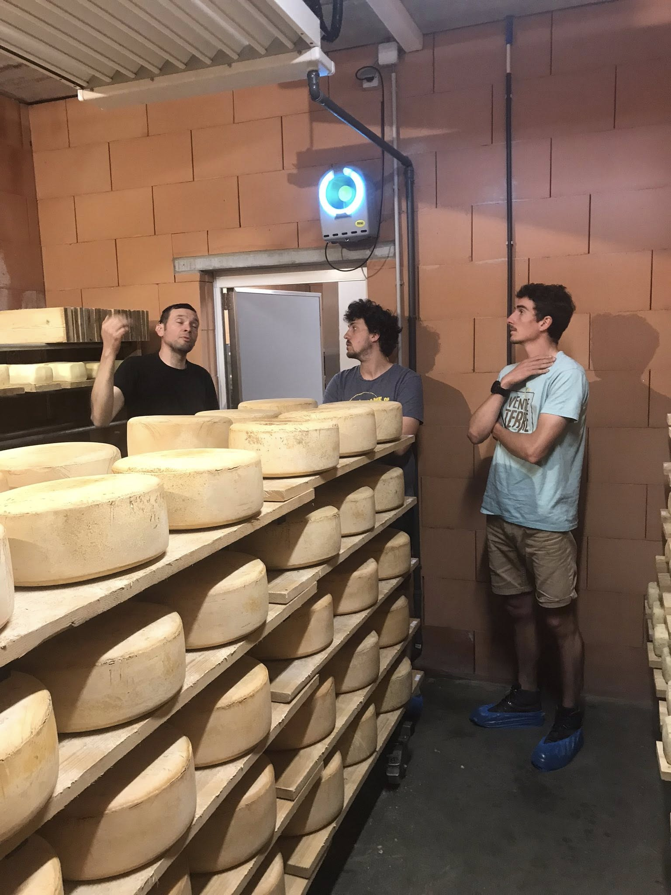

Pourquoi transformer nous-mêmes notre lait ? 🧀
Notre philosophie est de travailler de la matière première jusqu'au produit fini. Nous fabriquerons nos fromages avec du lait de chèvre et du lait de vache, une complémentarité qui nous permettra de proposer un vaste choix de produits aux arômes et aux textures variés.
En limitant les intermédiaires, nous gardons la maîtrise de chaque étape, de la production à la commercialisation. Transformer notre lait à la ferme nous permet de mieux valoriser notre travail, de renforcer notre autonomie et notre capacité à faire face aux aléas, tout en veillant au respect de nos valeurs de bout en bout.
Un savoir-faire au lait cru 🤲
Grâce à nos différentes expériences agricoles, nous disposons déjà, au sein du collectif, d'un bel éventail de recettes fromagères. Nous travaillerons principalement au lait cru pour garantir un produit vivant et de meilleure qualité.
Mais les possibilités sont nombreuses ! Nous continuerons à découvrir d'autres pratiques et à expérimenter de nouvelles recettes pour enrichir progressivement notre gamme au fil du temps.
Les fromages et les produits frais 🏷️
Notre gamme comprendra des fromages lactiques doux et onctueux, des pâtes pressées fermes et fondantes, ainsi que des tommes de terroir au goût plus affirmé. Pour agrémenter nos fromages, nous cultiverons directement sur place nos propres herbes aromatiques et fleurs comestibles.
En plus des fromages, nous proposerons également des yaourts et des faisselles. Ces produits frais viendront compléter notre gamme pour apporter de la variété et de la fraîcheur au quotidien.


